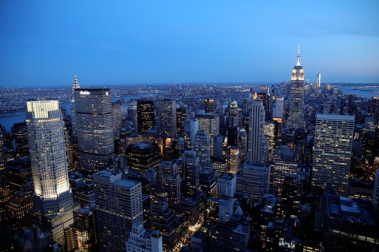

NYC Skyline—The Comcast Building
New York City’s skyline is iconic, appearing in numerous shows, movies, and for the lucky travelers and locals, photographs and home movies. There are plenty skyscrapers to admire in the Big Apple. The Empire State and Chrysler building immediately come to mind. However, the city offers many other options as well. For the well-traveled New Yorker and tourist, the Comcast Building may not be a familiar name, but it is quite a familiar sight.
The Comcast Building, or 30 Rock as it is more commonly called in reference to its address, is currently the home of the television network, National Broadcasting Company (NBC), and many of its shows, like The Tonight Show and Saturday Night Live. Those willing to stand in line and wait awhile have the opportunity to be a part of live audiences for some of these shows and the frequent live performances they host!
This landmark skyscraper is an awe-inspiring display of the Art Deco style of architecture. The building has a steel frame with limestone cladding, 70 stories high. The building is the center of Rockefeller Center, and stands as the 8th tallest building in the city. Visitors can grasp the enormous magnitude of this height by visiting one of its three observation decks, on the 67th, 69th, or 70th floor. The building presents a breathtaking panorama of New York City’s skyline in every direction, including the famed Empire State Building on Fifth Avenue.

There is as much to see on the outside as there is on the inside. One can easily become lost exploring the many hallways of this place. The building has a shopping concourse below ground and is conveniently connected to New York’s transit system, providing access to the B, D, F, and M trains. This truly expansive building takes up several New York City blocks, brimming with visitors and locals at nearly all hours of the day. This is especially true in the summer when there are free live concerts and in the winter when the Christmas Tree stands at Rockefeller Center.
If that is not enough of skyscraper goodness for you, try checking out the Skyscraper Museum. The museum is located at 39 Battery Plaza in Manhattan, near many other New York City landmarks, like Battery Park and Castle Clinton. The museum covers the fascinating evolution of the New York City skyline and is open from 12-6pm, Wednesday to Sunday. General admission to this museum is only $5!
Random Trivia:

The famous photograph called Lunch atop a Skyscraper, was taken during construction of 30 Rockefeller Plaza.
This skyscraper has had many names due to a few transfers of ownership over the years. Originally, it was called the RCA building because of its main tenant, the Radio Corporation of America. Some more fondly remember it as the GE Building, when the General Electric Company took over the RCA corporation.